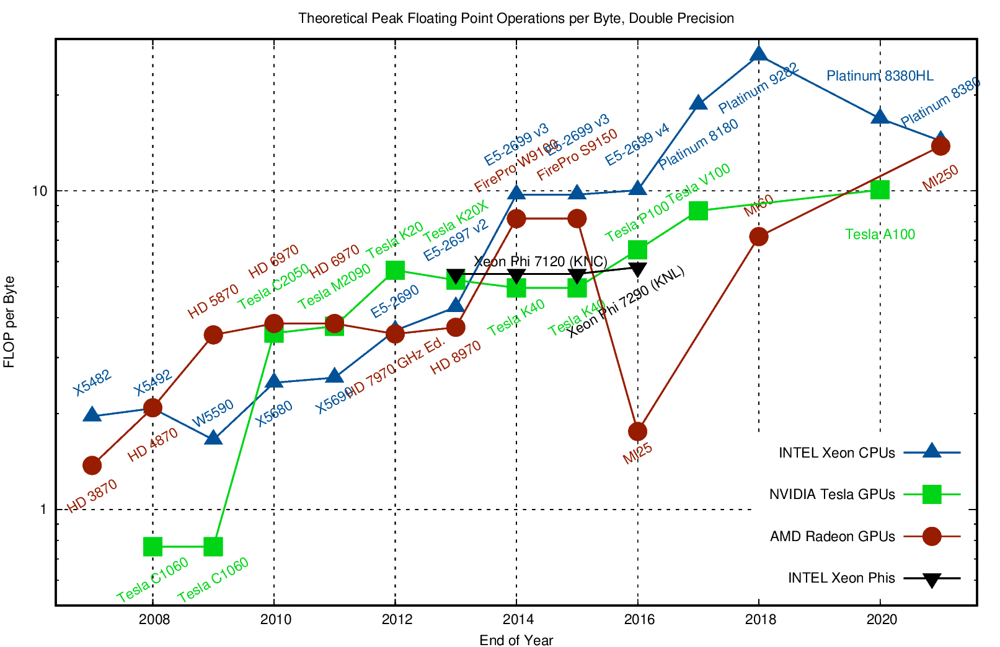
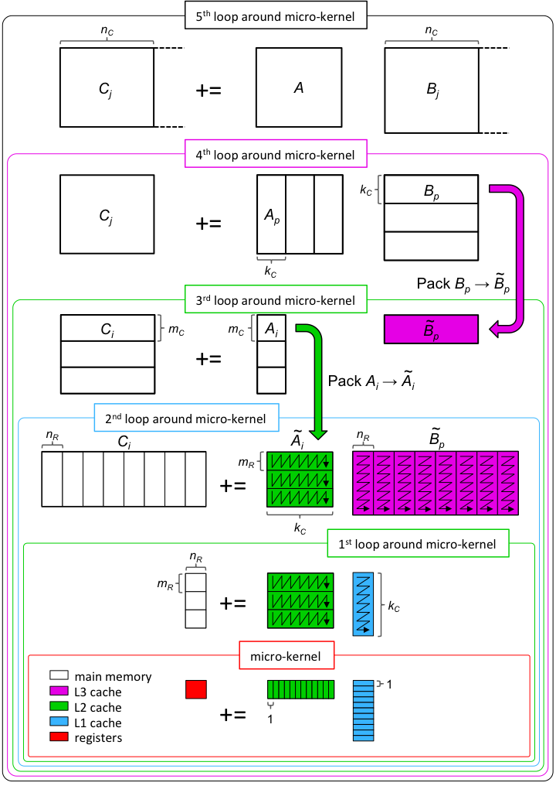

2025-09-24 QR Stability#
Last time#
Gram-Schmidt process
QR factorization
Today#
Stability and ill conditioning
Intro to performance modeling
Classical vs Modified Gram-Schmidt
Right vs left-looking algorithms
using LinearAlgebra
using Plots
using Polynomials
default(linewidth=4, legendfontsize=12)
function vander(x, k=nothing)
if isnothing(k)
k = length(x)
end
m = length(x)
V = ones(m, k)
for j in 2:k
V[:, j] = V[:, j-1] .* x
end
V
end
function gram_schmidt_naive(A)
m, n = size(A)
Q = zeros(m, n)
R = zeros(n, n)
for j in 1:n
v = A[:,j]
for k in 1:j-1
r = Q[:,k]' * v
v -= Q[:,k] * r
R[k,j] = r
end
R[j,j] = norm(v)
Q[:,j] = v / R[j,j]
end
Q, R
end
gram_schmidt_naive (generic function with 1 method)
How accurate is our naive Gram-Schmidt?#
m = 40
x = LinRange(-1, 1, m)
A = vander(x)
@show cond(A)
Q, R = gram_schmidt_naive(A)
@show norm(Q' * Q - I)
@show norm(Q * R - A)
cond(A) = 3.2410612068621734e17
norm(Q' * Q - I) = 1.9953024166575801
norm(Q * R - A) = 1.5034874442576487e-15
1.5034874442576487e-15
A variant with more parallelism#
function gram_schmidt_classical(A)
m, n = size(A)
Q = zeros(m, n)
R = zeros(n, n)
for j in 1:n
v = A[:,j]
R[1:j-1,j] = Q[:,1:j-1]' * v
v -= Q[:,1:j-1] * R[1:j-1,j]
R[j,j] = norm(v)
Q[:,j] = v / R[j,j]
end
Q, R
end
gram_schmidt_classical (generic function with 1 method)
norm([0 1; 1 0])
1.4142135623730951
m = 20
x = LinRange(-1, 1, m)
A = vander(x, m)
@show cond(A)
Q, R = gram_schmidt_classical(A)
@show norm(Q' * Q - I)
@show norm(Q * R - A)
cond(A) = 2.7224082312417406e8
norm(Q' * Q - I) = 1.4985231287367549
norm(Q * R - A) = 7.350692433565389e-16
7.350692433565389e-16
Why does order of operations matter?#
is not exact in finite arithmetic.
We can look at the size of what’s left over#
We project out the components of our vectors in the directions of each \(q_j\).
x = LinRange(-1, 1, 30)
A = vander(x)
@show cond(A)
Qc, Rc = gram_schmidt_classical(A)
Qn, Rn = gram_schmidt_naive(A)
scatter([diag(Rc) diag(Rn)], yscale=:log10)
cond(A) = 1.8386373834885094e13
The next vector is almost linearly dependent#
x = LinRange(-1, 1, 20)
A = vander(x)
Q, _ = gram_schmidt_classical(A)
Q, _ = qr(A)
v = A[:,end]
@show norm(v)
scatter(abs.(Q[:,1:end-1]' * v), yscale=:log10)
norm(v) = 1.4245900685395503
Cost of Gram-Schmidt?#
We’ll count flops (addition, multiplication, division*)
Inner product \(\sum_{i=1}^m x_i y_i\)?
Vector “axpy”: \(y_i = a x_i + y_i\), \(i \in [1, 2, \dotsc, m]\).
Look at the inner loop:
for k in 1:j-1
r = Q[:,k]' * v
v -= Q[:,k] * r
R[k,j] = r
end

Counting flops is a bad model#
We load a single entry (8 bytes) and do 2 flops (add + multiply). That’s an arithmetic intensity of 0.25 flops/byte.
Current hardware can do about 10 flops per byte, so our best algorithms will run at about 2% efficiency.
Need to focus on memory bandwidth, not flops.
Dense matrix-matrix mulitply#

Inherent data dependencies#
Right-looking modified Gram-Schmidt#
function gram_schmidt_modified(A)
m, n = size(A)
Q = copy(A)
R = zeros(n, n)
for j in 1:n
R[j,j] = norm(Q[:,j])
Q[:,j] /= R[j,j]
R[j,j+1:end] = Q[:,j]'*Q[:,j+1:end]
Q[:,j+1:end] -= Q[:,j]*R[j,j+1:end]'
end
Q, R
end
gram_schmidt_modified (generic function with 1 method)
m = 20
x = LinRange(-1, 1, m)
A = vander(x, m)
Q, R = gram_schmidt_modified(A)
@show norm(Q' * Q - I)
@show norm(Q * R - A)
norm(Q' * Q - I) = 8.486718528276085e-9
norm(Q * R - A) = 8.709998074379606e-16
8.709998074379606e-16
Classical versus modified?#
Classical
Really unstable, orthogonality error of size \(1 \gg \epsilon_{\text{machine}}\)
Don’t need to know all the vectors in advance
Modified
Needs to be right-looking for efficiency
Less unstable, but orthogonality error \(10^{-9} \gg \epsilon_{\text{machine}}\)
m = 10
x = LinRange(-1, 1, m)
A = vander(x, m)
Q, R = qr(A)
@show norm(Q' * Q - I)
norm(Q' * Q - I) = 2.2760345477368898e-15
2.2760345477368898e-15